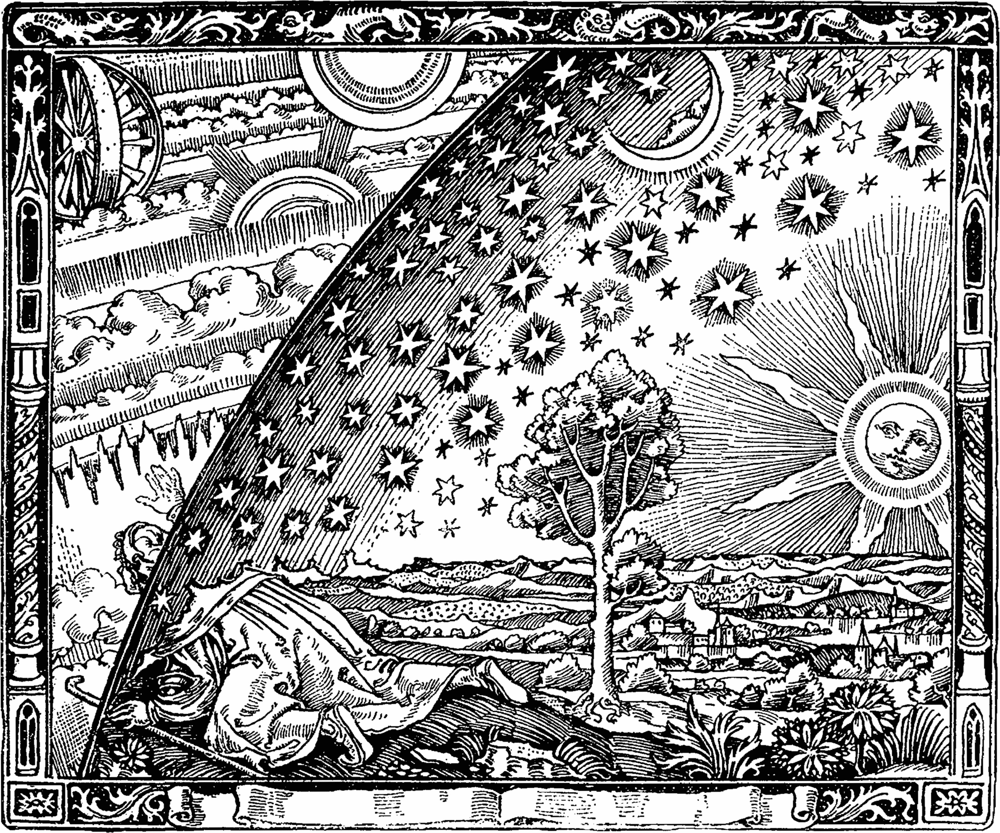
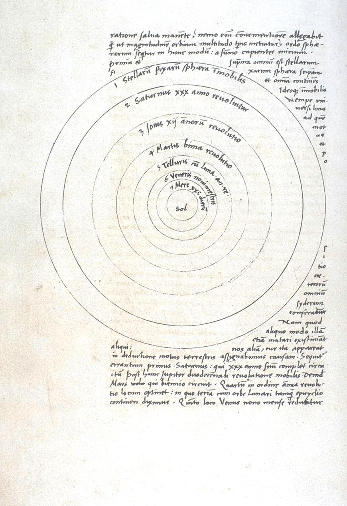
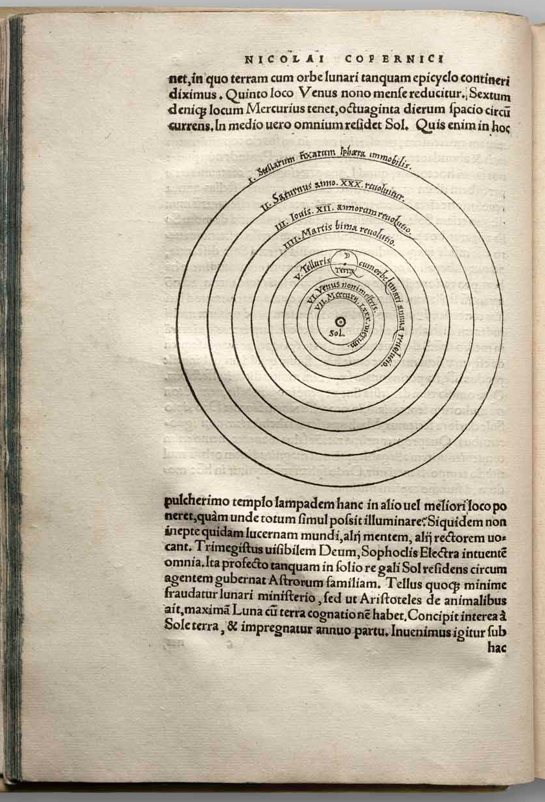
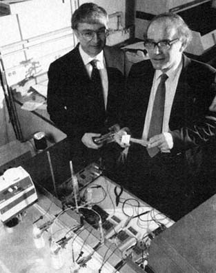
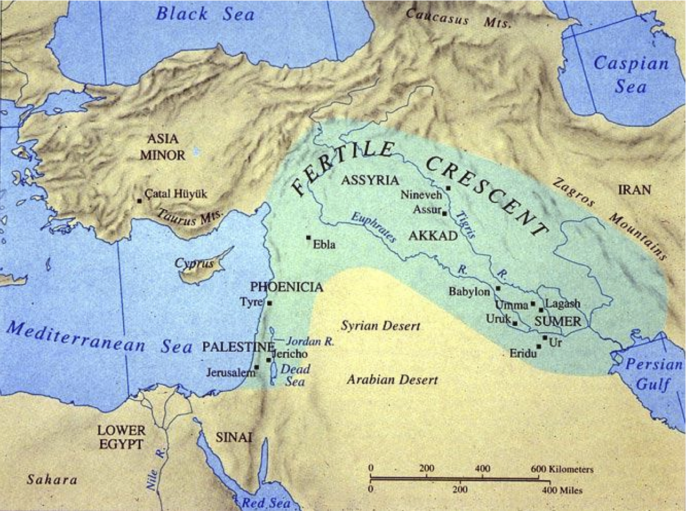
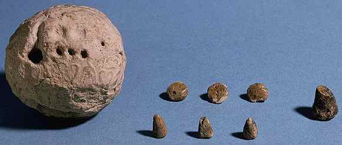
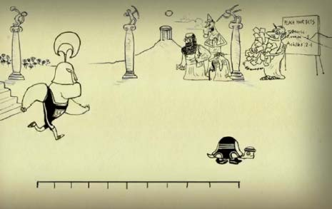

Wissen - Wissenschaft
Wissenschaftsbilder

In seinem weit verbreiteten Buch L´atmosphère. Météorologie populaire illustrierte Nicolas Camille Flammarion den enormen Erkenntnisfortschritt, mit dem sich der neuzeitliche Mensch von seiner mittelalterlichen Irrtümern befreite.1 Nachfolgend wurde dieses Bild gar als neuzeitliche Darstellung der intellektuellen Befreiung von den dunklen Irrtümern des Mittelalters missgedeutet. In ihm entdeckt der auf Knien kriechende Gelehrte eine Welt jenseits der flachen Erdscheibe. Der Mensch, der sich darauf außerhalb einer dörflichen Umgebung an den Rand seiner kleinen Welt wagt, macht eine Entdeckung, indem er seinen Kopf durch eine durchlässige Halbsphäre hinausstreckt: Er erfährt, dass auch jenseits der sichtbaren Sternensphäre eine Welt existiert. Der forschende Mensch erkennt die Unendlichkeit des ihn umgebenden Raumes. Er gewinnt diese Einsicht durch seine Augen, doch ist diese Begebenheit metaphorisch beschrieben. Jenseits der Kristallkugel leiten nicht mehr die Sinnesorgane das Erkenntnisvermögen an. Es sind die geistigen Einsichten, die zur Erkenntnis führen. Die zu erkennende Welt ist ganz und gar nicht leer - dort befinden sich, hier symbolisch dargestellt, Wolkenschichten und Planeten, deren Bewegung durch etwas wie das in der linken oberen Ecke dargestellten Räderwerk angetrieben wird. Dieses Räderwerk selbst ist nicht sinnlich wahrnehmbar. Nur der Verstand vermag es, ihren ineinandergreifenden Mechanismus zu verstehen.
Dieses Bild beschreibt den nach Erkenntnis suchenden Menschen, der zum Abschluss des Mittelalters in der Lage ist, aus seiner begrenzten Welt der direkten sinnlichen Wahrnehmung auszubrechen und die dahinter liegenden Gesetzmäßigkeiten der Natur zu ergründen. Diese Gesetzmäßigkeiten, welche für die Bewegung der Welt verantwortlich sind, werden im Holzschnitt Flammarions durch die Räderwerke symbolisiert.
Übung
Beschreiben Sie in wenigen charakteristischen Sätzen vier gelegentlich vorgebrachte Unterscheidungsmerkmale, mit denen sich Wissenschaft von allgemeinen Ansichten/Meinungen/Vorstellungen unterscheidet. Es ist ausreichend, Unterscheidungsmerkmale zu geben, ohne eine vollständige Definition von Wissenschaft zu versuchen.
Faktisch beschreibt kein neuzeitliches Buch den Fortschritt der Zeitgenossen eines Kopernikus, Kepler oder Newton auf diese Weise. Flammarions populärwissenschaftliche Veröffentlichung über Meteorologie von 1888 wendet sich an ein gebildetes Lesepublikum. In Zeiten großer industrieller Umbrüche ist der Glaube an die fundamentalen Fortschritte der Wissenschaft selbstverständlich. Die neuen Wissenschaften des 19. Jahrhunderts und industriell nutzbare technologische Umbrüche sind gleichbedeutend mit der Emanzipation des Menschen von einer eingegrenzten, provinziellen dörflichen Lebenswelt.
Solche Illustrationen verraten mehr als den Zeitgeist, in dem sie entstanden sind. Sie drücken das Selbstverständnis des Menschen über sein Erkenntnisvermögen und dessen Grenzen aus. Es ist ein Bild, welches diesen Prozess der Entwicklung vom Unwissen zum Wissen als einen typischen Prozess der Erkenntnis beschreibt. Die Vorstellung, dass der Mensch ursprünglich irrtümlicherweise etwas Falsches für wahr hielt, entsprach dem damals verbreiteten Bild eines historischen Prozesses der Wissenschaftsentwicklung. Solche Wissenschaftsbilder sind sehr einfache Schemata der Wandlungen der Ansichten epistemischer Akteure zu den Sachverhalten der Welt. Wissenschaftsentwicklung wird als zeitliche Entwicklung der Ansichten oder Meinungen eines Akteurs oder einer Gruppe von Akteuren verstanden. Es wird sehr schematisch angegeben, was vorher als Meinung vertreten wurde und was nach dem Veränderungsschritt an dessen Stelle trat. Es wandelt sich etwas von einem ursprünglichen in einen neuen Zustand, und diese Wandlung wird in den allermeisten Fällen auf die Wandlung von Personen bezogen. Alle diese unterschiedlichen Bilder variieren die Konkretisierung eines solchen Schemas.
Wissenschaftsgeschichte und Wissenschaftstheorie
Anfang des 19. Jahrhunderts, zur Entstehungszeit des Holzschnitts, war der Glaube populär, dass sowohl im Mittelalter als auch in der Antike die Menschen der Annahme waren, dass die Erde eine Scheibe sei. Tatsächlich glaubten weder griechische Philosophen, ein Ptolemaios oder die christliche Kirche an eine Scheibengestalt der Erde.
Wenn man sich allerdings mit der Wissenschaftsgeschichte beschäftigt, wird man schnell feststellen, dass weder die Gelehrten der Antike, noch die des Mittelalters die Erde für eine Scheibe hielten. Schon in den Schriften von Aristoteles findet sich die Überzeugung, dass die Erde eine Kugel ist. Dieses Wissen ging auch im Mittelalter nicht verloren.
Dies ist nur ein Beispiel von vielen, wie verbreitete Vorstellungen der heutigen wie auch der damaligen Menschen darüber, wie Geschichte eigentlich stattgefunden hat, voller Legenden, Mythen und oftmals Irrtümer sind. Diese folgen immer demselben Schema, welches den Übergang von einer fast grotesk anmutenden Unwissenheit zu einer nachfolgenden, absolut erhellenden Erkenntnis beinhaltet. So etwas kam in der Geschichte nie vor.
Die Historiker diskutieren darüber, wann und mit welchen Gründen die Menschen erkannten, dass die Erde eine Kugel ist. Die üblichen Probleme betreffen die Erklärungsnot, wie man ohne herunterzufallen überall auf der Kugeloberfläche stehen kann.
Das Modell der Entwicklung der Wissenschaft ist ein Modell der Entwicklung vom mythos zum logos, von der Unkenntnis zur Erkenntnis, von der Barbarei zur Zivilisation - ein Modell voller Fiktionen, welches nichts mit der Realhistorie zu tun hat.
Diese Einführung soll mit einigen dieser Fiktionen aufräumen. Sie gibt sowohl Einblicke in die Wissenschaftsgeschichte als auch in die Wissenschaftstheorie. Beide sind aus mehreren Gründen unverzichtbar füreinander: Wissenschaftsgeschichte ist eine deskriptive Wissenschaft. Sie versucht die historische Entwicklung der Wissenschaften möglichst genau zu beschreiben. Es geht ihr jedoch nicht nur um das Aufzählen von historischen Fakten, sondern auch um die Suche nach Erklärungen, wie und warum die Akteure in der Wissenschaft auf eine bestimmte Art und Weise vorgegangen sind. Um dieses Ziel zu erreichen, müssen historische Quellen, die den Ursprung der Interpretationen der historischen Ereignisse enthalten, erschlossen und aufbereitet werden. Doch diese stecken teilweise selbst schon voller Fiktionen. Eine kompetent durchgeführte Wissenschaftsgeschichte versucht daher, die Legendenbildungen zu vermeiden und das historische Wissen korrekt zu beschreiben. Die Wissenschaftstheorie hingegen ist eine normative Wissenschaft. Sie versucht Verhaltensregeln aufzustellen, mit denen die Wissenschaft ihr Ziel möglichst zuverlässig erreichen kann. Ihr Ziel ist die Reflexion über ein Element im Prozess der Bildung von Erkenntnissen, der mit ihrem Gewinn, ihrer Rechtfertigung sowie dem Vermeiden von Irrtümern zu tun hat.
Die Antwort auf die Frage nach den Untersuchungsgegenständen beider Wissenschaften, nach der Definition von Wissenschaft selbst und ihrer Ziele ist sehr komplex. Es gibt für sie keine hinreichende und notwendige Bedingung. Von Wissenschaften wird oft in dem Sinne gesprochen, dass diese organisierte Unternehmen darstellen, die sich dem Ziel verschreiben, Wissen zu gewinnen. Diese hat es wohl seit Beginn der Menschheitsgeschichte gegeben. Die Frage jedoch, ob ein bestimmtes organisiertes Fachgebiet als Wissenschaft bezeichnet werden kann oder etwas anderes darstellt und durch welche Kriterien man zu einer Antwort kommen kann, ist ein umstrittenes Thema, sowohl innerhalb der Wissenschaft als auch innerhalb der Wissenschaftstheorie. Dies ist die Suche nach dem sogenannten Abgrenzungskriterium (engl. demarcation problem).
Wissensdefinitionen
Um dem zentralen Ziel des Wissenserwerbs, der Vermeidung von Irrtümern, gerecht zu werden, sollen zunächst zwei bekannte Definitionen von Wissen präsentiert werden. Zum einen gibt es die sogenannte platonische Wissensdefinition, die Platon insbesondere in den Dialogen Theaetet und Sophistes argumentativ begründet.2 In der analytischen Philosophie wird seine Definition auf eine kompakte Formulierung reduziert: Sie definiert Wissen als wahre, gerechtfertigte Überzeugung oder Meinung. Es werden drei Bedingungen aufgestellt, die nach der Logik genau dann, wenn gelten und hinreichend erfüllt sein müssen, wenn etwas nach platonischer Definition als Wissen gelten soll. Für die schematische Vereinfachung soll NN im weiteren Verlauf für den Namen einer beliebigen Person stehen, die weiß, dass eine Aussage, welche durch P ausgedrückt wird, wahr ist. Die erste Bedingung des Wissens ist, dass es begrifflich kein Wissen gibt, das falsch ist. Dies ist ausgeschlossen. Die zweite Bedingung legt fest, dass NN daran glauben muss, dass P der Fall ist. NN kann P nicht einfach wissen, weil es wahr ist, sondern die Person muss von dessen Wahrheit überzeugt sein. Das heißt jedoch nicht, dass man zu jeder Zeit an P denken muss. Man kann das Wissen auch passiv besitzen. Die dritte Bedingung lautet, dass NN dazu in der Lage ist, Gründe anzuführen, warum sie dieses P glaubt. Falls P von NN geglaubt wird und NN dafür gute Gründe angeben kann, muss P allerdings nicht zwangsläufig wahr sein. Falls P falsch ist, hat sich die Person unabhängig von ihren Überzeugungen geirrt und verfügt hinsichtlich von P nicht über Wissen. Etwas zu wissen bedeutet somit nicht, über unumstößliche Gründe für die Wahrheit von P zu verfügen. In diesem Sinne ist auch wissenschaftliche Erkenntnis fallibel. Wenn jedoch alle drei Bedingungen erfüllt werden, kann man im platonischen Sinne von Wissen sprechen. Diese Wissensdefinition ist in der Philosophie auch unter dem Namen deskriptive Wissensdefinition bekannt, weil es hier um die Proposition P geht.
Das Verständnis von Wissen bezieht sich stets auf eine besondere Leistung oder den Zustand von Personen. Wissen kann nicht in Dingen sein. Manche Forscher vertreten die Ansicht, dass sich Wissen beispielsweise auch in einem konstruierten Auto befindet kann. Dieses ließe sich von einem Ort A an einen Ort B bringen. Damit würde auch das Wissen um dessen Konstruktion transportiert. Dieser Ansatz ist begrifflich konfus. Autos können kein Wissen besitzen, sondern nur die Personen, die sich damit befassen.
Praktisches Wissen - deklaratives Wissen
In einer Vielzahl von Sprachen wird Wissen als Begriff benutzt, um besondere Leistungen von Personen oder Personengruppen auszuzeichnen. Es bezieht sich auf etwas, von dem man zustimmend sagen möchte, dass es der Fall ist. Das bedeutet jedoch nicht, dass in allen Sprachen zu jeder Zeit eine Begrifflichkeit existieren muss, die dieser Definition von Wissen entspricht. Ausgerechnet das Englische macht im Vergleich zu einigen anderen europäischen Sprachen keinen Unterschied zwischen verschiedenen Wissensvarianten. Dort existiert nur das Verb to know für wissen. Man muss dafür auf den Kontext des Verbes achten. Ob nun über to know how oder to know that gesprochen wird, ist begrifflich klar zu unterscheiden. In der deutschen oder französischen Sprache hingegen wird klar zwischen wissen und kennen, bzw. savoir und connaître getrennt. Der zweite Ausdruck betrifft das praktische Wissen und beschreibt das Vermögen, etwas zu können. Dieses Vermögen ist beispielsweise eine erfolgreiche Durchführung von etwas, bei dem etwas entsteht, dessen Entstehung beabsichtigt wurde. Dieses Können beinhaltet keine Proposition in seine Formulierung. Daher ist praktisches Wissen konzeptionell etwas anderes als das deskriptive Wissen der platonischen Definition. Die beiden Varianten des Wissens hängen jedoch sehr eng miteinander zusammen. Das Know-How, also das praktische Wissen, hat am Ende des erfolgreichen Tuns beispielsweise einen Gegenstand als Ergebnis, von dem sich behaupten lässt, dass er die Bedingungen erfüllt, weshalb man dieses Know-How anwenden möchte. NN weiß, wie ein Objekt O herzustellen ist, wenn NN begründbar in der Lage ist, etwas zu tun, damit O entsteht. Am Anfang der Entwicklung des Wissens der Zivilisationen stand wohl das praktische Wissen. Es beinhaltete das Know-How, wie Speere und Messer herzustellen waren. Beim Versuch der Rekonstruktion dieses Know-Hows stellten die Forscher fest, dass diesem ein Jahrtausende langer Prozess zu Grunde liegen musste, bis die frühen Menschen in der Lage waren, einen Faustkeil so herzustellen, dass man mit ihm schneiden konnte. Schon die Entwicklung eines scheinbar simplen Werkzeugs erfordert einen Entwicklungsprozess von mehreren tausend Jahren. Nach der Entstehung dieses praktischen Wissens folgt das deklarative Wissen, welches quasi die Qualitätsrechtfertigung des durch Know-How hergestellten Produkts ausmacht. Das P des platonischen Wissens ist im praktischen Wissen die Qualität Q des gewünschten Objekts O. Im Verlauf der Erläuterungen wird noch an vielen weiteren Stellen auf die Wechselwirkung zwischen praktischem und deklarativem Wissen verwiesen. Beide Wissensformen sind nötig, um Wissen zu gewinnen und beide Wissensformen sind unabdingbar für jede Form von Wissen.
Die Zielsetzung von Wissenschaft
Das Ziel sowohl von deklarativem als auch von praktischem Wissen ist der Gewinn von Wissen und das Vermeiden von Irrtümern. Dies ist das epistemische Ziel jeder Aktivität, die als Wissenschaft charakterisiert werden kann. Die Wissenschaftsphilosophie oder -theorie beschäftigt sich mit der Frage, mit welcher Methode man Wissen in dem oben definierten Sinne erreichen oder rechtfertigen kann und dabei Irrtümer vermeidet. Die Reflexion von Methoden ist eine der Kernfragen der Wissenschaftstheorie und gleichzeitig eines der Kernprobleme jeder Wissenschaft. In den folgenden Kapiteln soll der methodische Apparat zur Maximierung der epistemischen Ziele der Wissenschaft im Mittelpunkt stehen. Es soll ein Spektrum an Methoden präsentiert werden, welche die Wissenschaft etablierte, um diesem Ziel gerecht zu werden. Dies ist zunächst ein philosophisches Thema. Die Wissenschaftsgeschichte kann dazu beitragen, indem sie allzu leichte Lösungsvorschläge der Philosophie durch den faktisch praktizierenden, erkenntnissuchenden Wissenschaftler erkennt und korrigiert. Karl Raimund Popper und andere haben für diese Korrektur einen einfach klingenden Vorschlag: die Kritik von Hypothesen durch ihre Widerlegung. Dieser weit verbreitete Ansatz schadet den Wissenschaften bis heute. Sind wissenschaftliche Hypothesen überhaupt so angelegt, leicht falsifiziert werden zu können? In den folgenden Kapiteln soll dies als eines der grundlegenden Irrtümer der Wissenschaftsphilosophie herausgestellt werden. Es gibt eine Vielzahl von Fällen in der Wissenschaftsgeschichte zur Illustration dieser Problemsituation. Die Ziele der Wissenschaftsgeschichte sind, wie eingangs bereits erwähnt, die Aufbereitung der Quellen und die Erklärung der historischen Abläufe. Da sich die historischen Abläufe zentral auf die Herausbildung von Wissen beziehen, geht es u.a. um die eben skizzierten philosophischen Themen: Wie wird Wissen aufgebaut? Wie wird Wissen erhalten? Der Prozess des Wissenserwerbs ist aus der Konsequenz der platonischen Definition heraus notwendigerweise an die urteilenden und rechtfertigenden Personen gebunden. Die Wissenschaftstheorie und die Wissenschaftsgeschichte versuchen im Verbund eine Erklärung des Findens von Wissen zu etablieren. Die Wissenschaftstheorie identifiziert hierbei die Methoden, die zur Erreichung der epistemischen Ziele von Wissenschaft führen. Die Wissenschaftsgeschichte soll hernach erklären können, warum der Verlauf des Erkenntnisgewinns in der Wissenschaft so abgelaufen ist. Die Wissenschaftsphilosophie wird mit dem Begriff normativ bezeichnet, da man sich faktisch nicht an die philosophischen Vorschläge des Vorgehens halten muss, sondern diese auch ignorieren kann. Die Philosophie hat an dieser Stelle eine fast provokative Funktion: Man stellt beim normativen Argumentieren Standards des vernünftigen Handelns auf, ohne diesen verpflichtet zu sein. Die Wissenschaftsgeschichte wiederum ist deskriptiv. Sie beschreibt die Prozesse des faktischen Erkenntnisverlaufs. Wissenschaftsgeschichte ohne Wissenschaftstheorie gerät in die Gefahr, zur reinen Sammlung von Fakten zu werden, an deren Ende nicht das wirkliche Verständnis dessen steht, warum ein wissenschaftlicher Akteur auf eine bestimmte Art und Weise gehandelt hat. Dazu ist ein Verständnis der Methoden der Wissenschaft und ihre philosophische Bewertung nötig.
Defizite der platonischen Wissensdefinition
In der platonischen Wissensdefinition lassen sich Lücken erkennen, welche die Definition bei aller Reflektiertheit nicht schließen kann. Im Folgenden sollen drei solcher Defizite hervorgehoben werden: Das erste Defizit betrifft die Definition des folgenden Konstruktes: Eine Person weiß etwas. Darin ist der Weg, wie NN zu diesem Wissen gelangte, nicht enthalten. Die heuristische Verfahrensweise des Wegs der Annahme, dass P wahr ist, wird nicht beschrieben. Der Weg ist faktisch jedoch nicht unerheblich für den Erkenntnisgewinn. Das, was praktisches Wissen ausmacht, füllt faktisch die Lücke. Es bezieht sich häufig auf etwas Erzeugtes, von dem am Ende deskriptives Wissen behauptet wird. Der zweite in der Definition nicht explizit auftretende Aspekt betrifft die sprachlichen Artikulation der Überzeugung. Das Mittel der Darstellung des Wissens taucht nicht auf. Die Wissenschaftsgeschichte hat uns allerdings gelehrt, dass dies extrem wichtig und geradezu unerlässlich in der Herausbildung der wissenschaftlichen Erkenntnis ist. Die Hauptarbeit besteht in vielen Phasen darin, die richtige sprachliche Ausdrucksmöglichkeit zu finden, um von einem P reden zu können, von dem ein Wissensanspruch behauptet wird. Auch der dritte Aspekt ist essenziell für das Verständnis der Prozesse des Wissenserwerbs oder -gewinns. Bereits in frühester Zeiten war es einer einzelnen Person praktisch unmöglich, Wissen zu erwerben, ohne auf den Erkenntnissen anderer aufzubauen. Wissen ist ein zwanghaft kollektiver Prozess. Das isolierte Wissen einer Einzelperson NN, ein P rechtfertigen zu können, ist praktisch nie gegeben. Ein Extrembeispiel stellt der Nachweis des Higgs-Teilchens im CERN dar: Dort kooperieren Forschergruppen von 6.000 bis 8.000 Wissenschaftlern pro Detektorabteilung. In einer solchen Forschungssituation findet sich nicht die eine Person NN, die einen Wissensanspruch rechtfertigen kann. Auch in der Geschichte der Medizin wird sich kaum ein Arzt finden, der unabhängig von seinen Vorgängern und der Tradition in der Lage war, zu rechtfertigen, warum eine Behandlung erfolgreich durchgeführt werden konnte. Das Erkenntnissubjekt ist folglich immer ein aktives Kollektiv. Dies hat Konsequenzen in der Ausprägung von Wissenschaft und der Gestaltung der Erkenntnisprozesse. Die agierenden Gruppen und Kollektive müssen organisiert werden, um Erkenntnisse zu gewinnen. Dazu gehören Mittel wie Archive und Publikationsorgane wie Zeitschriften oder Bücher, die das Wissen für nachfolgende Generationen konservieren.
Die Abhängigkeit von sprachlichen Formulierungen
Die Wichtigkeit der sprachlichen Formulierung der eigenen Beobachtungen als Teil des Wissensprozesses lässt sich an einem Beispiel aus der Wissenschaftsgeschichte illustrieren. Im Mittelpunkt steht ein Ausschnitt aus dem Manuskript De Revolutionibus von Nikolaus Kopernikus.3 Es geht um die Seite in Abb. [derevo], welche vermutlich im Jahr 1536 niedergeschrieben wurde. Sie stellt die Anordnung der Planeten in ihrer Bewegung um die Sonne dar. Diese Darstellung wird häufig als Begründung dafür aufgeführt, warum Kopernikus die Ansicht vertrat, dass die Planeten die Sonne umkreisen und nicht mehr dem geozentristischen Weltbild folgte. Ob die Erde oder die Sonne im Zentrum des Kosmos steht, stellt scheinbar zwei klare Alternativen dar. Nach dem Standardklischee wird die geozentristische Ansicht stets den altertümlichen Wissenschaftlern zugeschrieben. Erst an dieser Stelle der Geschichte, mittels dieses Manuskripts, scheint Kopernikus in der Lage, es anders darzulegen. Die Sonne befindet sich in der Darstellung im Zentrum. Die Erde und die Planeten Merkur, Venus, Mars, Jupiter und Saturn bewegen sich um sie herum. Es stellt sich die Frage, warum dies das bessere und gerechtfertigte Wissen ist. Das Argument dafür ist häufig die Einfachheit der Erkenntnis, dass dies der richtige Aufbau der Welt sei. Alles sei auf wenigen, schlüssigen Kreisen darstellbar, ganz im Gegensatz zu den älteren Darstellungen, die pro Planet komplizierte Schleifenkonstruktionen brauchten, um dessen Bewegungen richtig abzubilden. Diese neue Einfachheit scheint ein Kriterium, um am Ende über die Wahrheit zu entscheiden.

Übung
Vielfach wird Kopernikus' Zeichnung des Aufbaus unseres Planetensystems so verstanden, dass die Kreise die Bewegungsbahnen der Planeten auf ihrem Umlauf um die Sonne als Zentralgestirn darstellt. Welche Gründe können Sie anführen, die diese Deutung widerlegrn?

Beim Abzählen der Kreise in der Illustration taucht jedoch eine erste Unstimmigkeit auf: Anstatt der erwarteten sieben Kreise, sechs für die Planeten und einen für die Sterne, die sich wie die Planeten um die Sonne bewegen, findet man in Kopernikus Abbildung acht Kreise. Man wird schnell dazu verleitet, den ersten Kreis als Bahn des Merkur zu deuten, so dass beim Abzählen nach außen hin der äußerste Kreis planetenlos bleibt. Kopernikus bezweckte mit dieser Darstellung jedoch gar nicht die Veranschaulichung der Bewegung der Planeten um die Sonne. Die Kreise stellen nicht die Bahnen dar, sondern die Sphären zwischen den Bahnen. Die Einfachheit als ausschlaggebendes Argument für die Richtigkeit von Kopernikus heliozentristischer Hypothese lässt sich daher nicht mehr halten. Der Bewegungsmechanismus der Planten befindet sich innerhalb dieser Grenzzonen und wird nicht abgebildet. Die Kreise stellen nicht die Bewegung der Planeten um die Sonne dar. Dieser Fehler in der Deutung der kopernikanischen Kreise ist erstaunlicherweise auch in einigen wissenschaftlichen Editionen zu finden. Kopernikus selbst starb einige Tage vor der Drucklegung seines Manuskripts, die er bei seinem Freund Georg Joachim Rheticus in Auftrag gab. Auch Rheticus zeichnete eine falsche Interpretation dieser Kreise. Daher wird in den meisten frühen Drucken nicht das eigentlich von Kopernikus Bezweckte dargestellt. Dies ist nicht das einzige Beispiel, das als Warnung vor vorschnellen Deutungen scheinbar einfacher Darstellungen dienen kann. Die richtige Interpretation und die Frage nach der wirklichen Aussage ist eine der Herausforderungen, welche die Wissenschaftsgeschichte mit sich bringt. In der platonischen Wissensdefinition kommt das sprachliche Mittel, das die Aussage P zum Ausdruck bringt, nicht vor. Das kopernikanische Beispiel sollte nun gezeigt haben, dass man gar nicht umhin kann, auch Illustrationen zu den sprachlichen Mitteln zu zählen. Auch mit ihnen können Aussagen getroffen werden. Wenn nicht mit Sorgfalt gearbeitet wird, sind grobe Fehlinterpretationen bei jeder Art von Ausdrucksmittel vorprogrammiert. Die historisch korrekte Interpretation von alten Schriften und Bildern verlangt neben fundierten Kenntnissen des historischen Kontextes, wie beispielsweise des durch Rheticus ausgelösten Missverständnisses, auch eine kritische Hinterfragung der eigenen Interpretation. Diese sollte sorgfältig mit der eigentlichen Intention der Aussage abgeglichen werden. Je größer die zeitliche Distanz, desto schwieriger ist die korrekte Interpretation.

Wissenschaftsphilosophie und Praxis
Dass auch die normative Aufgabe der Wissenschaftstheorie eine wichtige Rolle spielt und nicht einfach das Gedankenspiel einiger weltfremder Philosophen darstellt, zeigt der Fall der Kalten Fusion.4 1989 publizierten Manfred Fleischmann und Stanley Pons (s. Abb. [pons]), dass es ihnen gelungen sei, mit einer simplen Apparatur eine Kernfusion bei Zimmertemperatur zu erreichen. Sie hätten dafür mit Palladiumelektroden Strom in ein Becken mit schwerem Wasser geleitet. Dies war der Anstoß einer riesigen öffentlichen Debatte. Der scheinbare Erfolg schaffte es nicht nur auf die Titelseite des Wallstreet Journal, sondern war auch Auslöser für die Veröffentlichung von mehr als 2.000 wissenschaftlichen Artikeln in einem Zeitraum von 16 Monaten nach der Erstpublikation und erleichterte die Forschungswelt im selben Zeitraum um 500.000.000 Dollar. Fleischmann und Pons hatten allerdings einen fatalen methodischen Fehler begangen, welcher in einem späteren Kapitel zur Methodik des Experiments näher erläutert wird. Dieser führte dazu, dass der Rechtfertigungsteil der Argumentation nicht haltbar war. Ist ein methodischer Fehler einmal begangen, so kann man ihn schwer rückgängig machen. In der Wissenschaftsphilosophie wurde festgestellt, dass sich falsche kausale Hypothesen, auch die der kalten Kernreaktion, niemals falsifizieren lassen. Dies ist einer der Gründe, warum an der kalten Fusion in der Wissenschaftswelt mit so viel Eifer geforscht wurde und in manchen Teilen der Welt noch heute geforscht wird. Die Widerlegung der Hypothese ist sehr schwer. Dies ist ein Beispiel dafür, warum die Wissenschaftsphilosophie allen Vorwürfen der Abgehobenheit zu Trotz, für die Praxis extrem relevant ist. Sie bringt Erträge und Einsichten in die Methodik des Gewinnens, Rechtfertigens und Kritisierens von Wissen.
Beweise
Jede heutige Wissenschaft steht vor dem Problem, dass sie neben Wissen, welches durch direkte Sinneswahrnehmung erreichbar ist, auch Wissen zu Sachverhalten behauptet, welches nicht durch die direkte Wahrnehmung zu belegen ist. Dies wird in Folge indirekter Beweis genannt. Solche Schlussverfahren oder Ableitungsschemata bilden den Kern der Wissenschaften, da Wissen fast ausschließlich über indirekte Beweise gewonnen wird. Eine Aussage über die Existenz eines unbeobachtbaren Faktors kann dann begründet werden, wenn ein gültiges Schlussverfahren angegeben werden kann. Die Angabe der rechtfertigenden Gründe für Wissen ist oft gleichbedeutend mit der Angabe des Schlusses auf die Wahrheit einer Aussage. Welche Beweisverfahren lassen sich in der Wissenschaft etablieren, um durch Beobachtung einen Schluss auf die Wahrheit von etwas, zu dem man Wissen ausdrückt, zu erreichen? Wenn A nicht durch direkte Beobachtung zugänglich ist, kann man den Schluss nur durch die Beobachtung von B, welches einen guten Grund für A liefert, vollziehen. Um solche Aussagen zu beweisen, braucht man ein Schlussverfahren, das erlaubt, von Beobachtungen, die den Sinnen zugänglich sind, auf eine unbeobachtbare Eigenschaft, Objekt oder Prozess zu schließen. Die Wissenschaft gewinnt Wissen fast ausschließlich über solche indirekten Verfahren. Aber was sind die Verfahrensmittel für ein solches Vorgehen?
Wahrheitserhalt bei Schlüssen - Beweise

Einer der vermutlich ersten Versuche der Etablierung eines solchen Wissens stammt aus Mesopotamien zwischen 4.000 und 3.000 v. Chr. Die Archäologie förderte Tonobjekte ans Tageslicht, welche in Abb. [tokens] dargestellt sind. Diese kleinen Objekte befanden sich in größeren Tonkugeln wie der in Abb. 1.2{reference-type="ref" reference="bulle"}. Der Grund dafür, kleine geometrische Tonobjekte in hohle Tonkugeln zu stecken, war lange Zeit nicht erklärbar. Dies wurde erst vor etwa 30 Jahren erforscht, u.a. durch Peter Damerow.5 Bei einer großen Zahl der Tonkugeln gab es auf der Außenseite Abdrücke der innen vorhandenen Tonobjekte. In späterer Zeit wurden die Tonkugeln von Tontafeln abgelöst. Auf den Tafeln findet man das selbe System, Dinge ab- oder einzudrücken. Auch diese wurden als Zahlausdrücke identifizierte. Die früheste Schrift, die der Mensch jemals entwickelte, drückte nicht einen Buchstaben oder einen Laut aus, sondern schlicht Zahlen. Die Urform davon sind diese Tonkugeln, die im Endeffekt Teil eines Beweissystems sind.


Bereits zu dieser frühen Zeit gab es in Mesopotamien regen Handel zwischen verschiedenen Regionen. Handelsgüter wie beispielsweise Schafe oder Weizen mussten vom Besitzer zum Empfänger etwa von Stadt A nach Stadt B transportiert werden, wonach der ehemalige Besitzer den äquivalenten Wert in anderen Gütern oder monetären Vorformen ausgezahlt bekam. Wie ließ sich sicherstellen, dass der Händler, der die Waren transportierte, am Ende die Menge ablieferte, die der Besitzer abgeschickt hatte? Hier entwickelte sich das fälschungssicherste Transaktionsmittel, welches in der Antike existierte. Diese Kegelchen, genannt tokens, entsprachen der Quantität des Handelsgut. Je nach abgeschickter Warenanzahl wurde die entsprechende Menge an tokens in diese Kugel gesteckt, versiegelt und gebrannt. Ohne die Kugel zu zerstören war keine Manipulation des abgezählten Inhaltes möglich. Zur zwischenzeitlichen Kontrolle, etwa zur Erinnerung an die Anzahl der transportierten Schafe, dienten die sich außen an der Kugel befindlichen Abdrücke der tokens. Dies ist der erste nachweisbare Akt der Erfindung eines Symbols. Es ist plastisch auf der Außenseite der Kugel erkennbar und bezeichnet die Anzahl der sich innen befindlichen tokens. Dieses Vorgehen ist so gut wie fälschungssicher. Der Empfänger kann die Kugel aufbrechen und sich versichern, dass die Anzahl der abgelieferten Schafe auch der intendierten Verkaufsanzahl entspricht. Es handelt sich dabei um ein Schlussverfahren: Wurde die Warenmenge am Ausgangspunkt korrekt eingegeben (Annahme), so ist die Wahrheit der Liefermenge auch am Endpunkt der Reise noch garantiert (Konklusion). Dies ist die erste Formulierung eines Beweises: Man trifft eine Aussage über den Umfang des Handelsgut. Während dieses transportiert wird, stellt man sicher, dass in den einzelnen Beweisschritten der Inhalt nicht verändert wird. Der Wahrheitswert der Aussage bleibt konstant. Die am Ende zu beweisende Aussage ist die Größe der ursprünglich aufgegeben Handelsmenge. Die Sicherheit des Beweismittels garantiert die Richtigkeit des Prozesses. Dies ist die Idee eines jeden Beweises. Das Beweismittel muss für jeden Beweisschritt sicherstellen, dass die Aussage auch am Ende noch wahr ist. Ein Beweis ist dafür da, den Wahrheitserhalt von Anfang bis Ende einer Transaktion zu garantieren. Diese tokens aus Mesopotamien sind der erste überlieferte Versuch dafür. Das Vorgehen lässt sich über die Tabelle [tab:tabtoken]{reference-type="ref" reference="tab:tabtoken"} schematisieren.
Aussage Beweismittel Annahmen 1 W = a , Anfang Beweissystem, Reformierung A1 2 W = a , Ende der Reise Beweisschritt (Z1), Beweissystem A1 3 Warengröße = a Reformulierung (Z2) A1
Zenons Paradox
Die Methode der eben behandelte Beweistechnik soll im Weiteren auf das Problem aus Aristoteles Physik Z 9, Zenons zweite Paradoxie der Bewegung, angewendet werden. In diesem Beispiel machen Achilles und die Schildkröte ein Wettrennen. Aristoteles beschreibt Zenons Paradox folgendermaßen:
Das zweite [Argument] ist der so genannte Achilles: Dieses besteht darin, dass das Langsamste, das läuft, vom Schnellen niemals eingeholt wird; denn notwendig kommt das Verfolgende zuerst dort an, woher das Fliehende aufgebrochen ist, so daß notwendigerweise das Langsamere immer etwas voraus sein wird. langsamste Läufer wird niemals vom schnellsten eingeholt werden. Zuerst einmal muss der Verfolger nämlich den Punkt erreichen, von dem der Verfolgte gestartet ist, so dass der langsamere notwendig immer etwas Vorsprung hat. 6
{#fig:achilles width="0.7\linewidth"}
Da die Schildkröte viel langsamer ist, lässt Achilles ihr einen Vorsprung. Das Problem besteht darin, dass der Verfolger zunächst einmal den Punkt erreichen muss, von dem der Langsamere gestartet ist. Obwohl er den Vorsprung der Schildkröte in kurzer Zeit eingeholt hat, kann er sie trotzdem nicht überholen, da die Schildkröte in der Zwischenzeit wieder ein bisschen weiter gekommen ist. In der Zeit, die er braucht, um den neuen, viel kleineren Vorsprung der Schildkröte einzuholen, ist diese erneut ein noch viel kleineres Stückchen vorangekommen. Man kann dieses Gedankenexperiment unendlich weiterführen und kommt zwangsweise zum Schluss, dass Achilles die Schildkröte nie überholen wird. Das dies in der Realität so niemals vorkommen wird, ist klar. Wo liegt der falsche Schluss?
Aristoteles formulierte hier ein Problem, welches die Menschen in der Antike nicht lösen konnten. Das formalisierte Argument ist schlüssig. Aus der Wahrheit der Annahmen folgt die Wahrheit der Konklusion. Sinnliche Wahrnehmung beweist jedoch die Falschheit der Konklusion, folglich muss eine der Prämissen falsch sein. Dieses Paradox war im alten Griechenland deshalb besonders problematisch, weil aus den für die Griechen vernünftigen Grundannahmen und Beweisverfahren eine der Erfahrung klar widersprechende Konklusion folgte. Es bestand also die Gefahr, dass die damals verwendeten Beweisverfahren nicht wahrheitserhaltend waren, was besonders in der Wissenschaft ein Problem darstellte. Heute ist bekannt, dass eine der Prämissen des Arguments falsch ist und dass es folglich nicht nötig ist zu behaupten, dass die Beweisverfahren in diesem Argument falsch sind. In der philosophischen Literatur finden sich bis ins letzte Jahrhundert viele Ansätze, die sich mit den Lösungswegen des Zenon-Problems beschäftigen. Das Ergebnis, dass der langsamere nicht vom schnelleren Läufer eingeholt werden kann, ist zwar offensichtlich falsch, es geht jedoch darum, den Schluss zu finden, der zwischen Ausgangslage und Ergebnis falsch gezogen wurde. Im Beweissystem mit den Tonkugeln und der gelieferten Schafherde geht man ebenso vor: Am Anfang stehen die Annahmen. Daraufhin werden Methoden gesucht, um weitergehende Schlüsse zu ziehen. Im Zenon-Fall ist der Schluss jener, dass Achilles immer eine zusätzliche Strecke laufen muss, um die Distanz, welche die Schildkröte davor hatte, einzuholen. Dies muss man unendlich oft wiederholen und kann daher die Schildkröte niemals einholen. Die Konsequenz, dass Achilles die Schildkröte deshalb nie einholen wird, ist jedoch falsch.